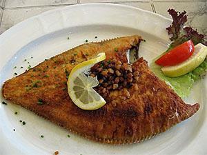
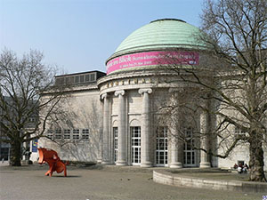
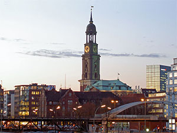

Hamburgo
De todas las ciudades de Alemania, Hamburgo es probablemente la más entretenida para un día de fiesta, con mucho que ver y hacer, pues cuenta con impresionantes museos, maravillosas galerías de arte, imponentes edificaciones y excelentes restaurantes y tiendas de primera clase.

Miluska: Algo que no hay que perderse durante unas vacaciones en Hamburgo es un paseo por el puerto de más de 800 años, una visita la famosa zona roja de Reeperbahn, que es un lugar predilecto para los turistas, y un infaltable momento de relajación y naturaleza en el Jardín Botánico de la ciudad.
Gastronomía: En la gastronomía de Hamburgo se destaca principalmente la cocina marina. Además está influenciadas por varias tendencias culinarias de Alemania.
Puerto de Hamburgo: El puerto de Hamburgo es un verdadero símbolo de la ciudad y origen de su riqueza, por lo tanto, es inevitable embarcarse en un paseo para recorrerlo y apreciar los contenedores gigantes y barcos que llegan de todo el mundo. Los recorridos se realizan entre los meses de marzo a noviembre en horas del mediodía y brindan información en inglés.
Kunsthalle de Hamburgo: Si se encuentra tomando un descanso en el Café Liebermann, lo aconsejable es entrar a admirar la galería de arte que se encuentra en el interior de las instalaciones. La galería cuenta con obras de importantes pintores alemanes que datan del siglo XV, impresionistas franceses y de Andy Warhol.
Monumentos de Hamburgo: El Ayuntamiento de Hamburgo es el Rathaus, la cual es la sede del gobierno de Hamburgo, ubicado exactamente en el barrio de Altstadt en el centro de la ciudad, cerca del lago Alster y la estación central.
Iglesias de Hamburgo: Esta mportante iglesia se encuentra situada en el centro de la ciudad portuaria de Hamburgo, su imponente torre así como su ubicación sirve de guía a los marineros pues es uno de los lugares más reconocidos de la ciudad de Hamburgo.

INICIO
ACERCA DE
DESTINOS
BLOG
CONTACTO